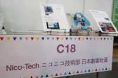
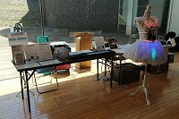
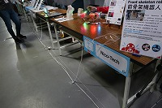

Archives
under construction...
Maker Faire Taipei 2019

Date: October 26-27, 2019
Place: Taipei, 華山1914創意文化園區
Nico-Tech menber and items:
Maker Faire Kyoto 2019

Date: May 4-5, 2019
Place: Seika town, KICK
Nico-Tech menber and items:
Maker Faire Taipei 2018

Date: November 2-4, 2018
Place: Taipei, 華山1914創意文化園區
Nico-Tech menber and items:
Maker Faire Taipei 2017
 Date: November 3-5, 2017
Date: November 3-5, 2017
Place: Taipei, 華山1914創意文化園區
Nico-Tech menber and items:
Maker Faire Singapore 2017
Maker Faire Xian 2017
Maker Faire Singapore 2016
Maker Faire Taipei 2016
Date: May 7-8, 2016Place: Taipei, 國立臺灣科學教育館
Nico-Tech menber and items:
Maker Faire Berlin 2015
 Date: October 3-4, 2015
Date: October 3-4, 2015
Place: Berlin, Postbahnhof
Nico-Tech menber and items:
Maker Faire Singapore 2015
Maker Faire Shenzhen 2015
Maker Faire Taipei 2015
 Date: May 30-31, 2015
Date: May 30-31, 2015
Place: Taipei, 華山1914創意文化園區
Nico-Tech menber and items: